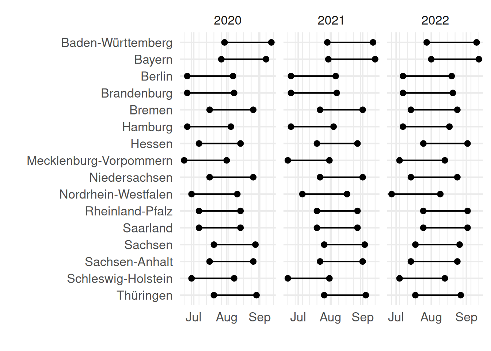
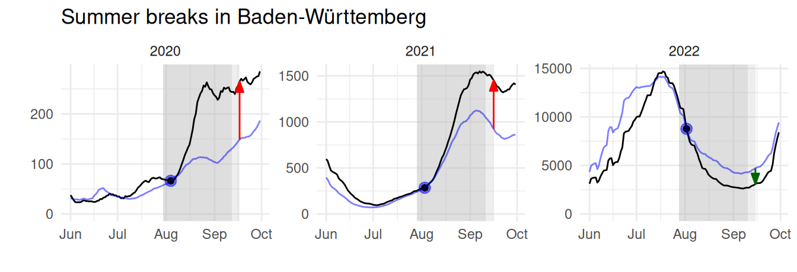
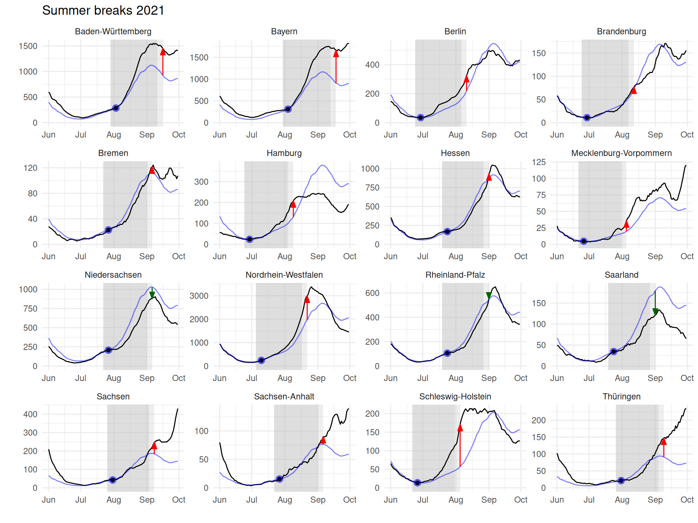
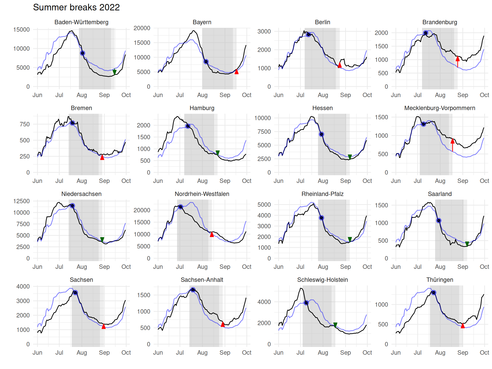
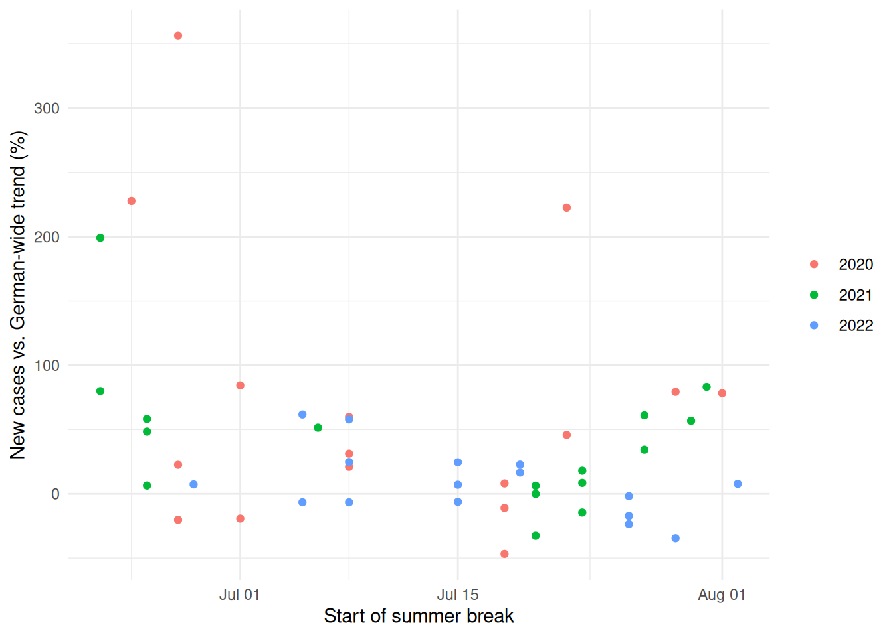
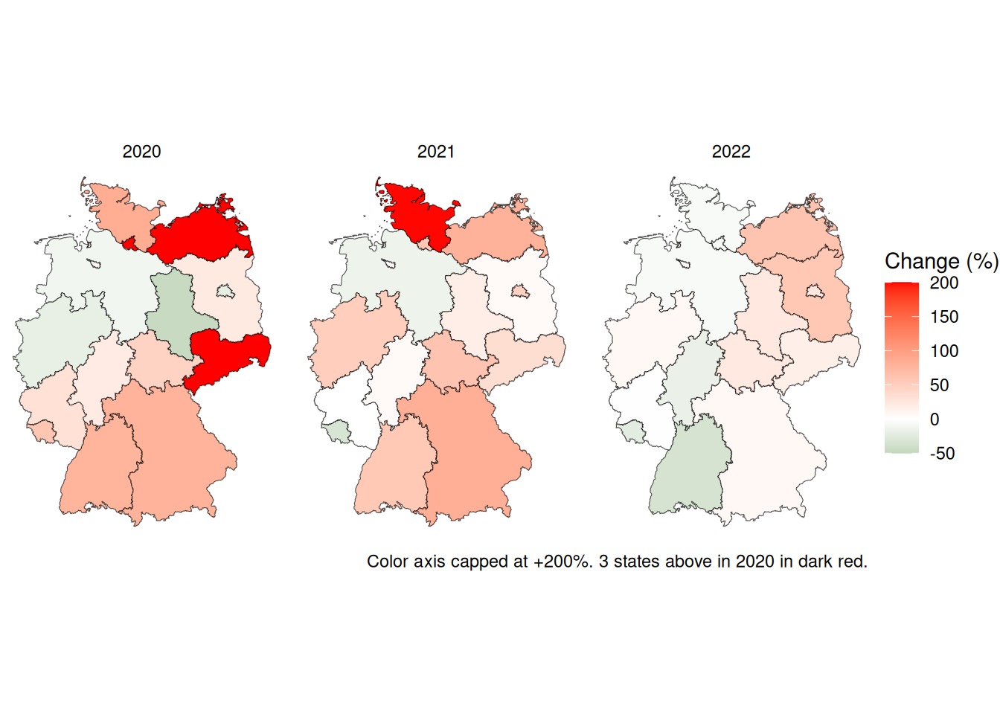
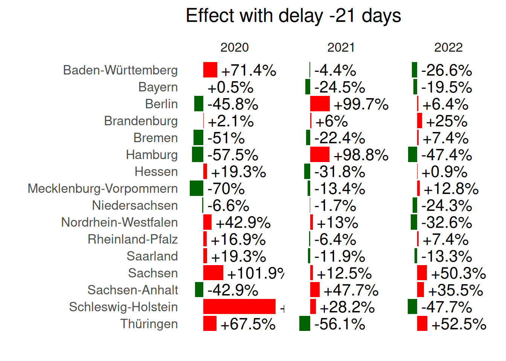
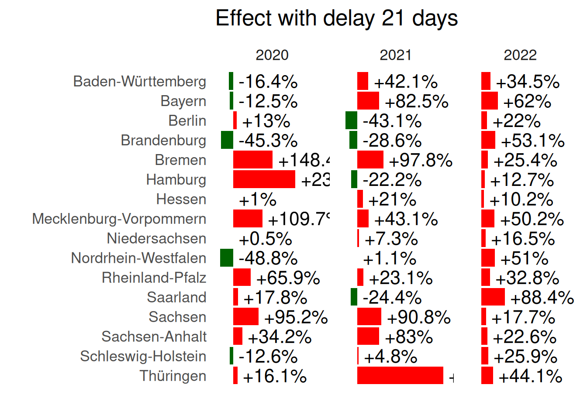
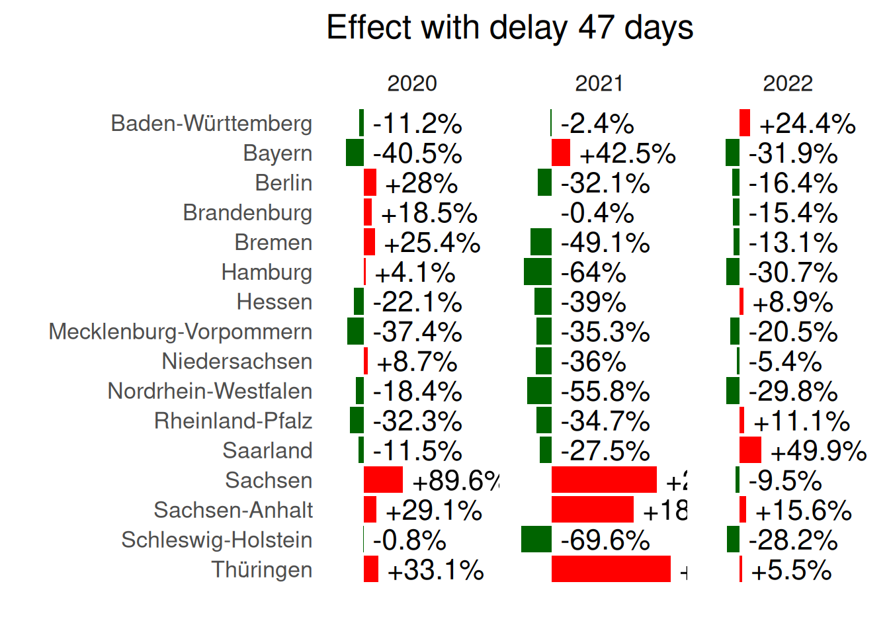
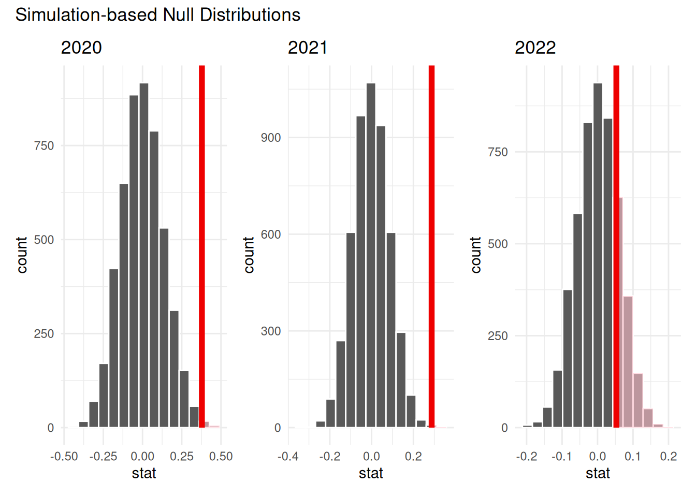

The summer break effects on the CoViD-19 pandemic in Germany 2020-2022
Author
Affiliation
Jan Lorenz
Constructor University
Published
January 10, 2023
Abstract
Using daily new cases for the 16 federal states of Germany we analyze if summer breaks in schools tend to increase or decrease the reproductive number of the CoViD-19 pandemic in the years 2020, 2021, and 2022. The beginnings of the six week summer breaks in Germany vary by five to six weeks among the federal states. This forms a kind of a natural experimental setting because we can compare the increase from the beginning of the breaks to the end of the break with the German-wide trend which is composed also of many regions and time spans without summer break. The analysis showed that over all, summer breaks in school seem to be more accelerating than decelerating contagion. However, this effect has almost vanished 2022 which marks the beginning of the endemic phase in Germany. The reason is probably that protection (by social distancing, masks, ban of large meetings, and other measures) in school and in the work place worked effectively in 2020 and 2021 while the vacation triggered new private ways of contagion with friends and relatives. Without protective measures in 2022, also schools and the work place offered more ways of contagion again.
The fate of a pandemic like the CoViD19 pandemic 2020-2022 is determined by the reproductive number which states how many others are infected by a newly infected person on average. Exponential growth or decline of new cases is determined by the reproductive number being above or below one. Small differences in environmental conditions, for example seasonality, can be important to make the difference. Also changes in daily behavior can make a difference.
An interesting question is about the role of summer breaks in school. Do summer breaks increase or decrease the reproductive number? One may think of effects in both directions:
During summer break kids are not in school as well as many of their parents who take holidays. This cuts off many daily channels of contagion.
On the other hand, families tend to travel during holidays which opens new channels of contagion through contacts while travelling or visits of relatives and friends.
This data analysis uses data about new daily CoViD-19 cases in the German federal states for the years 2020, 2021 and 2022 and the dates of the German summer breaks in schools in the federal states to answer this questions.
2 Data
Code
# These are the packages used in the reportlibrary(tidyverse)library(lubridate) # for date wranglinglibrary(tidymodels) # for hypothesis testlibrary(sf) # For map in appendixlibrary(patchwork) # Data# raw data sources, download or documentation, data processing, and saving are done # by the script download_data.R# Load the data produced by down_load.Rload("data/RKI_vacation_shp.RData")# This loads# RKIstate : 16854 x 3 (stateCode, Refdatum, Fall)# Has new cases (Fall) per federal state (stateCode) per day (Refdatum)# summervac : 48 x 5 # Summer school vacation per federal state (BL=shortcode, Land=name of state, # with start and end date and year# DE_shp : Shape files for maps of federal states
German summer breaks in school differ across the federal states of Germany. This produces a natural setting to disentangle the effect of vacation from the general trend of the pandemic. The idea is to compare the increase (or decrease) during the summer break in a certain state with the general increase (or decrease) in Germany because usually at least some states are not in there summer break at least some of the time.
The dates of the summer breaks are shown in Figure 1.
Code
# Compute variation of start and end dates and overlap of summer breaksvariation <- summervac |>group_by(year) |>summarize(start_variation =max(start) -min(start),end_variation =max(end) -min(end),overlap =min(end)-max(start)+1)# Plot of durationssummervac |>pivot_longer(c(start,end)) |>ggplot(aes(x = value, y =fct_rev(Land))) +geom_point() +geom_line() +facet_wrap(~year, scales ="free_x") +scale_x_date(date_minor_breaks ="1 week") +labs(x ="", y ="") +theme_minimal(base_size =16)

Figure 1: Summer school vacations on Germany’s federal states 2020 to 2022.
The ending dates of summer breaks differ by maximally 44 days in 2021 (42 days in 2020, 34 days in 2022). There are just 2 days of overlap between all summer breaks in 2021 (3 days in 2020, 9 days in 2022).
We want to judge the effect of summer breaks against a general German-wide trend. A good available proxy for the German-wide trend is using the new cases in all of Germany.1
Detailed data for regional units in Germany is available through the Robert-Koch-Institut (RKI) at https://github.com/robert-koch-institut/SARS-CoV-2-Infektionen_in_Deutschland. For this analysis the data is aggregated to new cases per day per federal state. For the following analyses we use seven-day averages to smooth out the typical weekly seasonality of CoViD-19 reporting. That means for each day we look at the average of the new cases of that day and the six days before that day.
Figure 2 shows the German-wide trends for the months June, July, August and September in 2020, 2021, and 2022. The trajectories of daily new cases (seven-day averages) differ substantially between the years: maximally around 2,000 new cases in 2020; slightly more than 10,000 daily new cases in 2021, and a maximum of almost 100,000 new cases a day in 2022.
Figure 2: General trend of new cases (7 day average) in Germany during the summer months. Note the different values on the y-axis values.
3 Analysis
The basic idea of the analysis is to assess how much the summer break increases or decreased the new cases compared with the German-wide trend for each state-year combination. In total, we have 48 state-year combinations for 16 federal states in three years. To that end, we normalize the German-wide trend for each state-year combination such that the new cases in the state and the German-wide trend coincide at the beginning of the assessment period and then compute the percentage increase (or decrease) which daily new cases have above (or below) the normalized German-wide trend ad the end of the assessment period. We call this percentage increase (or decrease) against the German-wide trend the summer break effect.
An infection with CoViD-19 is typically detected several days afterwards because of the incubation period. So, a new case at the first day of the vacation should usually be attributed to an infection event which was before the the summer break. For the same reason, a new case a few days after the summer break can still be attributed to be an infection during vacation. Because of this it makes sense to shift the assessment period for the summer break effect a few days further from the actual vacation dates. We compute the effect for several delays.
Code
# Extend the dataset with vacation dataRKIstate_ext <- RKIstate |>mutate(Fall_smooth =smooth_cases(Fall)) |>left_join(RKI_DE, by ="Refdatum") |>left_join(summervac, by =c("year", "stateCode"="BL"))# Make a dataset with the measure of vacation_effect per year-state for various delays # (the default one is five days delay, the others are computed for robustness checks)# vacation_effect = factor from normalized German-wide trend to the state's trend # at the end of the assessment period (end + delay)# The German-wide trend is normalized at the start of the assessment period (start + delay)# Computation is done for the respective summer break vacation periods with several delay # "delays" from -42 up to 47 days. That way we have effects in a similar period directly before the summer break# and directly after the summer break, as well as all values in between, # including 0 days and 5 days (which use to display the main result)# A function to compute the vacation effects for a particular delaymake_delayed_vacation_effect <-function(delay) RKIstate_ext |>filter(Refdatum==(start + delay)) |>mutate(trend_factor =1/Fall_DE_smooth*Fall_smooth)|>select(stateCode,year,trend_factor) |>right_join(RKIstate_ext |>filter(Refdatum==start + delay | Refdatum == end + delay), by =c("stateCode", "year")) |>mutate(Trend = Fall_DE_smooth * trend_factor) |>filter(Refdatum == end + delay) |>mutate(delay = delay)# Create the data set of the vacation effect for several delaysRKI_mdel <-seq(-42,47,1) |>map(make_delayed_vacation_effect) |>list_rbind() |>mutate(vacation_effect = Fall_smooth/Trend, log_vacation_effect =log(vacation_effect), dir_color =if_else(vacation_effect <1, "down", "up"))
In the following, we mostly work with five days delay. That means, we normalize the German-wide trend to the level of the new cases of the specific state-year combination at the day five days after the start of the summer break and we measure the vacation effect on the fifth days after the end of the summer break.
Figure 3 demonstrates the basic idea of the analysis for the state of Baden-Württemberg.
Code
# colors for arrows in figurecolors <-c("up"="red", "down"="darkgreen")# Make dataset with a normalized trend for each state with delay 5RKI <- RKIstate_ext |>filter(Refdatum==start +5) |>mutate(trend_factor =1/Fall_DE_smooth*Fall_smooth) |>select(stateCode,year,trend_factor) |>right_join(RKIstate_ext, by =c("stateCode", "year")) |>mutate(Trend = Fall_DE_smooth * trend_factor)RKI |>group_by(year, stateCode) |>filter(stateCode =="BW", month(Refdatum) %in%6:9) |>ggplot(aes(x = Refdatum)) +geom_rect(data = summervac |>filter(BL =="BW") |>mutate(Refdatum = start), aes(xmin = start, xmax = end, ymin =-Inf, ymax =Inf), fill ="gray", alpha =0.5) +geom_rect(data = summervac |>filter(BL =="BW") |>mutate(Refdatum = start), aes(xmin = end, xmax = end +5, ymin =-Inf, ymax =Inf), fill ="gray", alpha =0.25) +geom_point(data = RKI |>filter(stateCode =="BW", Refdatum == start +5),aes(x = Refdatum, y = Fall_smooth), color ="blue", alpha =0.5, size =3) +geom_point(data = RKI |>filter(stateCode =="BW", Refdatum == start +5),aes(x = Refdatum, y = Fall_smooth), size =1.5) +geom_line(aes(y = Fall_smooth), color ="black") +geom_line(aes(y = Trend),color ="blue", alpha =0.5) +geom_segment(data = RKI_mdel |>filter(stateCode =="BW", delay ==5), aes(yend = Fall_smooth, y = Trend, xend = Refdatum, x = Refdatum, color = dir_color), arrow =arrow(length =unit(0.25,"cm"), type ="closed", angle =20) ) +scale_color_manual(values = colors) +facet_wrap(~year, scales ="free") +expand_limits(y =0) +labs(x="",y="", title ="Summer breaks in Baden-Württemberg") +guides(color ="none") +theme_minimal()

Figure 3: New cases (seven-day average) for the state of Baden-Württemberg (black line) compared to the German-wide trend (blue) normalized such that case numbers coincide five days after the first day of summer break (blue-black dot). The vacation range is shown in dark gray. The ligher gray area marks the five days after vacation ends. The arrow shows if new cases have increased or decreased compared to the German-wide trend.
The German-wide trend (blue line) in Figure 3 show how the cases in the state would have developed when the new cases in the state would have developped proportional to the new cases in Germany. The red (for increase) and green (for decrease) arrows are the basis for the computation of the vacation effect. The vacation effect is a percentage. It is the length of the arrow divided by the actual level of cases of the German-wide trend at the end of the assessment period. Figure 5, Figure 6, and Figure 7 in the Appendix show this type of analysis for all state-year conbinations.
Figure 4 shows all 48 percentage changes for every state-year combination in our dataset.
Figure 4: Change from summer break start to summer break end (with a delay of five days because of the incubation period), compared to the normalized German-wide trend.
The strongest effects are visible in 2020 in Hamburg, Mecklemburg-Vorpommern, and Sachsen where cases have increased more the three times than the German-wide trend(more than +200%). In total, twelve of the 16 federal states showed an increasing summer break effect. Large effects in percentage were possible because daily new cases were very close to zero in some states in summer 2020 after the initial wave in spring has been broken.
In 2021, the pattern repeated with only two states showing a decrease while most states showed clearly increasing summer break effects. In 2022, effect summer break effects were on average smaller and the there were substantially more states with a decreasing summer break effect.
So, we hypothesize that there is a positive summer break effect, that means that overall case numbers tend to increase more through the summer break compared to the German-wide trend where the summer break is still ahead or already over in part of the time an part of the region. We test the hypothesis with a standard one sided t-test, with the following specifications: For each year we take the sample of all 16 federal stated.2 Instead of the percentage change we take the logarithm of the increasing (or decreasing) factor. That means for example, an increase of 30% is transformed to \(\log(1 + 0.3) = 0.26\), a decrease of -10% to \(\log(1 - 0.1) = -0.11\).3 The null hypothesis is that the mean of the log-transformed effect is zero. The alternative hypothesis is the the mean of the log-transformed effect is greater than zero. We can transform the mean log-transformed effect back to percentage change.4
The following table shows the mean percentage effects, the lower bounds of the 95% confidence intervals5 and the p-values stating how likely it is to achieve such an average when the null hypothesis was true:
Code
tt20 <- RKI_mdel |>filter(year ==2020, delay ==5) |>t_test(response = log_vacation_effect, alternative ="greater")tt21 <- RKI_mdel |>filter(year ==2021, delay ==5) |>t_test(response = log_vacation_effect, alternative ="greater")tt22 <- RKI_mdel |>filter(year ==2022, delay ==5) |>t_test(response = log_vacation_effect, alternative ="greater")# function to transform log back to percentage changetr <-function(x) format(100*(exp(x)-1), digits =3)
Year
Mean effect
Lower bound 0.95-CI
p-value
2020
46%
13.7%
0.00899
2021
33.3%
14.2%
0.00266
2022
5.45%
-5.13%
0.196
So, the hypothesis that there is an increasing summer break effect has a high degree of statistical significance.
This is confirmed by simulation based (bootstrapped) null distributions as shown in Figure 15 in the Appendix. Further on, the Appendix also shows that there is no visible effect of the early or late vacations (Figure 8) or geographically (Figure 9).
4 Conclusion
The effect of the six week summer break on CoViD-19 contagion could at least in part be disentangled from the general trend because summer break beginnings in Germany vary within five to six weeks and for some vacation periods there is little overlap. The analysis showed that the effect of summer breaks tends to increase case numbers compared to the German-wide trend in the summers of 2020 and 2021, while the effect vanished in 2022.
For the interpretation it is important to report some context of the pandemic and pandemic measures. In summer 2020 case number were very low after the very first wave in spring had been broken. However, schools still had strong protective measures and during vacation there were many travel restrictions in place. In summer 2021, older people in Germany were mostly vaccinated, but only a part of parents and almost no children. Still many safety measures in schools were in place. In summer 2022, also many children were vaccinated and boostered and almost no restrictions were in place. It was the beginning of the transition to the endemic phase.
The analysis suggests that protection at school and in the work place was working effectively, while travelling and visiting relatives and friends (although restricted) during the summer break tended to trigger more contagion and to increase the reproductive number. In the endemic phase, probably also schools and the work place contributed to contagion and there is no clear summer break effect visible anymore.
These results were obtained using a reasonable delay of five days to account for an incubation period. That means we shift the beginning and end days of the summer break by five days Figure 10, Figure 11, Figure 12, and Figure 13 shows how the effect looks when other delays are used and Figure 14 shows the average effect over all delays. The results confirm that an increasing vacation effect exists, because the average positive effect is most clearly visible in the range around the delays of zero days in 2020. However, for the years 2021 a positive effect is also visible for longer delays after the summer break, and in 2022 a positive effect exists with a delay of around three weeks after the summer break. The analysis of potential reasons for these delayed effects is beyond the scope of this analysis.
Overall, it should also be noted that the effect is statistically significant and increase of 46% (2020) and 31% (2021) on average is substantial. However, there are fluctuations. That means, there were also federal states where the summer break had a decreasing effect in comparison to the German-wide trend.
Figure 5: All federal states in 2020. Panels are as described in the caption of Figure 3.
Code
plot_year(2021, 5)

Figure 6: All federal states in 2021. Panels are as described in the caption of Figure 3.
Code
plot_year(2022, 5)

Figure 7: All federal states in 2022. Panels are as described in the caption of Figure 3.
5.2 Analyzes of summer break beginning day and region
Code
RKI_mdel |>filter(delay ==5) |>ggplot(aes(as_date(yday(start)), 100*(vacation_effect-1), color =factor(year))) +geom_point() +labs(x ="Start of summer break", y ="New cases vs. German-wide trend (%)") +theme_minimal() +theme(legend.title=element_blank())

Figure 8: The beginning of the summer break and the effect are unrelated.
Code
DE_shp |>right_join(RKI_mdel |>filter(delay ==5), by =c("NAME_1"="Land")) |>ggplot(aes(fill=100*(vacation_effect-1))) +geom_sf() +facet_wrap(~year) +scale_fill_gradient2(low ="darkgreen",mid ="white",high ="red",midpoint =0,name ="Change (%)",limits =c(-50,200),na.value ="red" ) +theme_void() +labs(caption ="Color axis capped at +200%. 3 states above in 2020 in dark red. ")

Figure 9: The effect does not show a clear geographic pattern.
5.3 The effect under other delays
Figure 10, Figure 11, Figure 12, and Figure 12 show the some graphic as the main effect in Figure 4, but with different delays, measuring the effect for the six weeks before the summer break, from three weeks before to the middle of the break, from the middle of the break to three weeks after the break, and for the six weeks five days after the summer break.
It is visible that the effect is mostly not as conclusively positive or negative as for the five days delay which is considered the summer break effect fitting to incubation time. However, the six week phase before the summer break 2022 seems to have a mostly increasing effect. The reasons are unclear. Further on, a summer break effect is also visible with 21 days delay. For this three week delay an effect is also visible for 2022.
Finally, Figure 14 shows the average effect for all delays from -42 to +47 days with a smoothed trend line for the scatter plot of all federal states. This visualization show that there are many fluctuations, but on average there is an increasing effect around 0 days of delay in 2020 and also in 2021. In 2021 there the increasing effect extends to 25 days delay, and in that range also an increasing effect exists for 2022. In conclusion, the clearest increasing summer break effect existed in 2020, while in 2021 the increasing effect also extended to the weeks after the break, and in 2022 an increasing effect can only be observed after some delay.
Figure 10: The effect analog to Figure 4 but shifting six weeks before. So we measure the effect in the six weeks before the summer break in each state.
Code
plot_with_delay(-21)

Figure 11: The effect analog to Figure 4 but shifting to three weeks before. So we measure the effect from three weeks before the summer break to the middle of the summer break.
Code
plot_with_delay(21)

Figure 12: The effect analog to Figure 4 but shifting to three weeks later. So we measure the effect from the middle of the break to three weeks after the summer break.
Code
plot_with_delay(47)

Figure 13: The effect analog to Figure 4 but shifting to six weeks and five days later. So we measure the effect in the six weeks before the summer break in each state.
Figure 14: The effect for all delays from 47 days before vacation start to 42 days after vacation start. For each delay the effect is plotted for all 16 federal states. The smoothed trend line represents a smoothed unweighted average of the effect.
5.4 Simulation null distributions and plotting the observed average effect
Code
plot_null_distribution <-function(y) {set.seed(1) point_estimate <- RKI_mdel |>filter(year == y, delay ==5) |>specify(response = log_vacation_effect) |>calculate("mean") RKI_mdel |>filter(year == y, delay ==5) |>specify(response = log_vacation_effect) |>hypothesize(null ="point", mu =0) |>generate(reps =5000, type ="bootstrap") |>calculate(stat ="mean") |>visualize() +shade_p_value(obs_stat = point_estimate, direction ="greater") +theme_minimal() +labs(title = y)}plot_null_distribution(2020) +plot_null_distribution(2021) +plot_null_distribution(2022) +plot_annotation(title ="Simulation-based Null Distributions")

Figure 15: Bootstrapped null distributions for the samples of the log-transformed effect for 2020, 2021, and 2022. For each sample there 16 values (one per federal state). The null hypothesis is that the mean of these 16 values is zero. The red line shows the point estimate of the observed means.
Footnotes
Of course, the German-wide trend includes the new cases of the specific state we are looking at. Alternatives would be to look at all new cases only in states which are currently not on vacation, but this would be more complicated and also the number of states which are currently not on vacation can be quite low on some days which creates new difficulties in interpretation.↩︎
The log-transformation is reasonable because the data can be expected to be closer to a normal distribution. The percentage change tend to be from a skew distribution because the theoretically maximal decrease is -100%, while the maximal increase is unbounded. The log-transformation removes also the lower bound and the distribution has no theoretical bounds as the normal distribution.↩︎
Thereby we compute the geometric means of the increase factor instead of its arithmetic mean.↩︎
Upper bounds being \(+\infty\) by definition in a one-sided t-test.↩︎
![]()